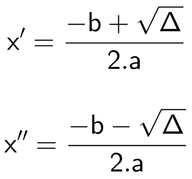

A fórmula de Bhaskara é um método resolutivo para equações do segundo grau cujo nome homenageia o grande matemático indiano Bhaskara Akaria, também conhecido como Bhaskaracharya.
A fórmula de Bhaskara é um método resolutivo para equações do segundo grau cujo nome homenageia o grande matemático indiano que a demonstrou. Essa fórmula nada mais é do que um método para encontrar as raízes reais de uma equação do segundo grau fazendo uso apenas de seus coeficientes. Vale lembrar que coeficiente é o número que multiplica uma incógnita em uma equação.
Em sua forma original, a fórmula de Bhaskara é dada pela seguinte expressão:
Para utilizar essa fórmula, é necessário lembrar que toda equação do segundo grau deve ser escrita da seguinte maneira:
Como resolver equações do segundo grau com a fórmula de Bhaskara?
Resolver uma equação do segundo grau é encontrar os valores de x (ou da incógnita proposta) que fazem com que essa equação seja igual a zero.
O método resolutivo de Bhaskara apenas exige que o valor numérico de cada coeficiente seja substituído na fórmula de Bhaskara. Após isso, basta realizar as operações matemáticas indicadas pela fórmula para obter as raízes da equação. Contudo, esse método costuma ser dividido em três etapas para facilitar a compreensão por parte dos alunos.
Passo 1: Calcular discriminante
Discriminante é a expressão presente dentro da raiz na fórmula de Bhaskara. É comumente representado pela letra grega Δ (Delta) e recebe esse nome pelo fato de discriminar os resultados de uma equação da seguinte maneira:
Δ < 0, então a equação não possui resultados reais;
Δ = 0, então a equação possui apenas um resultado real ou possui dois resultados iguais (essas duas afirmações são equivalentes);
Δ > 0, então a equação possui dois resultados distintos reais.
Portanto, para calcular as raízes de uma equação do segundo grau, primeiramente calcule o valor numérico de Δ.
Passo 2: Substitua discriminante e coeficientes na fórmula de Bhaskara
Geralmente a fórmula de Bhaskara é ensinada apenas da seguinte maneira:
Nessa etapa, basta substituir os valores de Δ e dos coeficientes da equação do segundo grau na fórmula acima.
Passo 3: Calcule as raízes da equação
Para essa última etapa, note na fórmula de Bhaskara que existe um sinal “±”. Esse sinal indica que devem ser realizados dois cálculos. O primeiro para o caso em que o número que o segue seja positivo e o segundo para o caso em que o número que o segue seja negativo.
É comum nomear cada um desses resultados como x' e x'' ou x1 e x2. Observe:

Exemplos:
Exercicios
Questão 1
Quais são as raízes reais da equação x2 – x = 6?
a) Apenas 3
b) 25 e 3
c) 25 e – 2
d) 3 e – 2
e) Apenas – 2
Questão 2
(ENEM 2013) A temperatura T de um forno (em graus centígrados) é reduzida por um sistema a partir do instante do desligamento (t = 0) e varia de acordo com a expressão (t em minutos):
T(t) = – t2 + 400
4
Por motivos de segurança, a trava do forno só é liberada para abertura quando o forno atinge temperatura de 39 °C. Qual o tempo mínimo de espera, em minutos, após desligar o forno, para que a porta possa ser aberta?
a) 19,0
b) 19,8
c) 20,0
d) 38,0
e) 39,0
Questão 3
Qual é a medida de um ângulo interno de um polígono convexo que possui 230 diagonais?
a) 164,35°
b) 23°
c) 1849°
d) 3780°
e) 20°
Obrigada por chegar até aqui, um beijo da Ana Clara e da Maysa